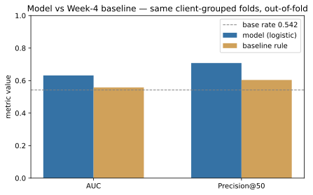
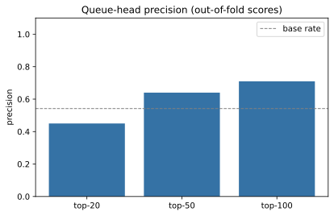

ML Internship · Capstone Research Paper
Choosing which existing pages to refresh, with an audit: a client-grouped ranking of 30,000 content items
Abstract. FlyRank works with large-scale search and content performance data, and the content-refresh lane asks a prioritization question: among thousands of existing pages, which few deserve a human reviewer's attention first? A content team can only refresh a small number of pages per week, and needs to know which items are most likely to be quietly declining. This paper ranks 30,000 pseudonymous content items from the starter dataset by a logistic model's probability of the item's observed 30-day trend being "down," and compares that model against a transparent three-rule baseline on identical client-grouped folds. Under a client-grouped five-fold out-of-fold evaluation the logistic model reaches AUC 0.63 vs. 0.56 for the baseline, with model Precision@50 ≈ 0.71 vs a 0.54 base rate (means over the folds). The result is a ranked queue — a decision-support ordering for a human reviewer, reason code and action on every row — not a system that edits, publishes, deletes, or otherwise changes content on its own, and not a causal experiment; refreshing content is never claimed here to cause a ranking or traffic recovery. The priority thresholds remain explicitly provisional.
1. Introduction — the decision this supports
A FlyRank editor has one question each week: which content should get this week's review hour? There are 30,000 items in the snapshot, each with trailing-window metrics; a human cannot re-derive an ordering by hand, but can honestly verify the first 20–50 rows of a good ranking. Money is spent as effort: content refresh is an editorial act, so the cost of a wrong call is an hour on a page that is not the best next candidate while a better one waits.
Data and statistics help here specifically because the task is about ordering under scale — decide which few items deserve attention first — and because the ordering can be validated with the same discipline as the label itself. The work is decision support for that reviewer: the model ranks and the playbook maps a reason code to a proposed, human-reviewed action. It is not an autonomous system — it does not edit, publish, delete, or redirect content — and it is an observational analysis of one snapshot, not a causal experiment. Nothing here claims that refreshing a page improves its future rankings or traffic. The rest of this paper states the data, the method, the measured results, the limits, and the ranked actions an editor can take tomorrow.
2. Data
The analysis uses the anonymized starter release of the FlyRank ML Internship
dataset (data/raw/content_refresh_anonymized.csv in this repository):
- Shape and grain: 30,000 rows × 44 columns, one row per pseudonymous content item. 32 distinct clients. All identifiers are pseudonymous.
- Windows: trailing-90-day window metrics (impressions, clicks, sessions, engagement, position, CTR …) plus a 30-day vs. previous-30-day trend pair. All numbers are snapshot-time aggregates; there are no overlapping or future windows in the model.
- Excluded on purpose.
client_idis used only as the grouping key for validation — never a feature.content_idis dropped as a row id. The label-derived columnstrend_directionandtrend_pctdefine the observed label and are excluded from the feature set; see the leakage checks in §3. No client name, domain, URL, or raw query appears anywhere in this page.
Outcome observed in this snapshot: 16,262 of 30,000 rows (0.542) carry the "declining" label.
3. Methodology
Target / label definition
decline_label = (trend_direction == 'down') — the observed 30-day trend of the
item. One sentence: we rank items by model-estimated probability that the item's observed
trailing trend was negative at snapshot time.
Features (24)
22 numeric + 2 categorical (content_type, main_intent). The exact
list is stored in the accompanying notebooks (w05_model.ipynb … w07,
and reproduced in capstone.ipynb). Everything is snapshot aggregate; no label or
id column is a feature.
Baseline (the fair comparison)
A transparent rule from the same columns, built in w04_baseline_score.ipynb:
stale (last update ≥ 180 days) + visible
(impressions_90d ≥ 500) + ranking (avg_position ≥ 10) → an integer 0–3,
ranked top-down. It is a fair baseline because it uses raw, human-checkable columns, the same
rows, and the same evaluation metric.
Model
Logistic regression on 24 features, built through a single scikit-learn Pipeline
(median / most-frequent imputers → standard scaler / one-hot → logistic, max_iter=1000,
random_state = 42). Chosen because the deliverable is a ranked queue with a calibratable
probability — not a black box.
Validation design
Client-grouped GroupKFold(k=5): every client sits in exactly
one test fold; preprocessing is refit inside each training fold; each row is scored only by the
fold that held its client out. The baseline is scored on the identical folds,
so model vs. baseline is apples to apples on the same validation design. Full details and the
"before / after" audit are in w06_validation_audit.ipynb.
Leakage checks
- Label sources:
trend_directionandtrend_pctare excluded from features (asserted in code). - IDs:
content_iddropped;client_idused only asgroups=in the split. - Can the harness detect leaks? A deliberately "leaked" probe (label source as a feature) reaches AUC ≈ 1.0 under this exact harness — since the model's honest AUC is ≈ 0.63, a true leak would have surfaced. None did.
- Windows: no overlapping or future windows in the feature list (asserted).
4. Results — model vs. baseline, same split
Mean ± std over the five client-grouped folds, out-of-fold, both methods on the same folds. Base rate per fold is shown so every precision number is read against prevalence.
| Metric | Model (logistic) | Baseline rule | Base rate |
|---|---|---|---|
| ROC–AUC | 0.632 ± 0.037 | 0.558 ± 0.096 | 0.542 |
| Precision@50 | 0.708 ± 0.148 | 0.604 ± 0.224 | 0.542 |
| Precision@100 | 0.726 ± 0.115 | 0.626 ± 0.161 | 0.542 |
| Precision@20 | 0.680 ± 0.214 | 0.640 ± 0.263 | 0.542 |


Every number above is recomputed in capstone.ipynb from the raw
CSV — nothing hard-coded.
Errors and edge behaviour
Fold spread is meaningful: Precision@50 ranges 0.48–0.88 across folds (std ≈ 0.15), a reminder that this is a directional orderer ∕ decision aid, not a per-page promise. About 0.08–0.26 of rows are missing keyword / word-count context; the imputer fills them, and the queue carries explicit "no data" markers rather than pretending to a decision where the information is absent.
5. Limitations — what this work cannot claim
- No causal claim. There is no refresh-event column and no before/after design in this repo. "Declining" is an association in a single snapshot; nothing here shows that refreshing a page causes recovery.
- A single snapshot. Trailing windows, one time-cut; no seasonality, no outcome-feedback loop. Numbers may not generalise to a different month or client mix.
- Label proxy. The trend label is derived from data at snapshot time; it is a proxy for "worth reviewing", not ground truth.
- Wide fold spread. P@50 ±0.15 — the queue is an ordering aid, not a guarantee; some clients will look systematically riskier/healthier than others.
- Heuristic priority. The 3-level priority labels are proposed thresholds (high ≥ 0.65, medium ≥ 0.50) cut from the model score, not validated or measured for optimality.
- Not production. There is no serving, drift monitoring, or retraining in this repository. This is an analysis artifact for the paper, regenerated on demand.
6. Ranked recommendations — what an editor does next
The full action playbook is w07_action_playbook.ipynb; the same list is a
ranked export (work/outputs/ranked_action_queue.csv). Rationale & reuse:
rows are ordered by out-of-fold P(decline); every row carries a reason code
(e.g. stale_visible_page, declining_with_demand,
thin_visible_page, page_one_decay_risk, low_ctr_visible_page,
low_engagement_visible_page, model_decline_risk…) and exactly one
archetype → action:
| Archetype | Action label | Why it sits where it does |
|---|---|---|
ctr_candidate | refresh_and_review_ctr | visible in SERP, under-clicks: a small title/CTR edit may move the one metric |
thin_content_candidate | expand_and_refresh | visible but short — depth may cap positioning |
refresh_candidate | refresh | declining with visible demand |
engagement_candidate | refresh_and_review_engagement | visible but losing sessions |
ranking_candidate | recheck_position | visible below page one with decent CTR — a positioning audit |
monitor_candidate / healthy | monitor | model says risk but no concrete page signal yet; or genuinely healthy |
insufficient_data | human_review | no position / keyword / word-count evidence — a reason to not act |
Order of review (cost/value heuristic, clearly proposed)
All rows in the queue are ordered by score first, but inside a priority band we recommend the cheapest high-confidence visible fix first: CTR → thin → refresh → engagement → positioning. There is no effort or cost datum in this repo, so that order is a decision-rule (qualitative), not a measured value.
Intended use — human review is mandatory
The queue is decision support for a content editor: open at rank 1, read the reason code,
verify against the raw metrics, and only then act. Six checks, all mandatory:
① search intent matches purpose · ② genuine content quality (or just mispositioned?) ·
③ real SERP context · ④ the trend label is a single number — check it · ⑤ still
commercially relevant? · ⑥ any "no-data" marker → route to insufficient_data.
A reviewer may always reject a row, with no pressure to act on it.
No-go cases: rows carrying no_position_data,
no_keyword_data, or no_wordcount are marked insufficient_data —
a reason to not act, not to act. No auto-refresh, no auto-publish at any point.
Decay / refresh insight — measured vs. proposed
Measured (this snapshot): days-since-last-update is right-skewed; decline rate differs by recency bucket; the queue-head precision numbers above. Not measured: no before/after refresh outcome exists in this repo — the refresh rule is a proposed, conservative decision-support guideline, not a promise.
Monitoring / retrain triggers (governance — proposed, not claims of firing)
- AUC on a fresh client-grouped 5-fold re-run < ~0.55 for two consecutive runs → retrain.
- Score-distribution shift > ~2 sd of the reference run → investigate data drift.
- Missing-rate / no-evidence rows jumping sharply → data-pipeline problem, not model.
- Reviewer overrides > ~20% on the top of the queue → re-tune the label and re-validate.
- Any change to how "declining" is defined → re-label, re-validate, retrain.
7. Reproducibility
- Repository: github.com/H-Mike-Yankee/flyrank-ml-internship (verified remote for this work).
- Notebooks (in order):
work/notebooks/w01_research_question.ipynb→w02_ml_task_framing→w03_data_contract→w04_baseline_score→w05_model→w06_validation_audit→w07_action_playbook→capstone.ipynb(this notebook re-computes every number in this paper from the raw CSV, top-to-bottom, with no cut-and-paste cross-checks needed). - How to re-run:
python -m nbconvert --execute --inplace work/notebooks/capstone.ipynb— deterministic folds (GroupKFold grouping is byclient_id; model seedrandom_state=42). - Environment (as run): Python 3.13, pandas 2.2.3, numpy 2.1.2, scikit-learn 1.5.2 (versions printed in-spec in the notebooks).
8. Acknowledgments & data credit
Built on the FlyRank ML Internship dataset (flyrank.ai): the anonymized starter release used here is the same slice the reference pipeline runs on — 30,000 pseudonymous content items.
This page is a research write-up, not a data-dump. All figures are aggregate; no row-level identifiers, client references, private URLs, or raw query text appear anywhere in this document.